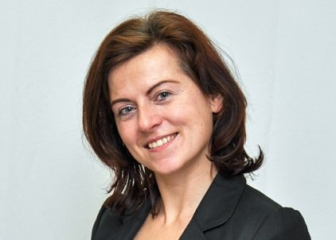

Náš tým
Lucie Hasilová
V osmé třídě jí po testech profesní orientace psycholožka sdělila: "Ty může být jeřábnice i veterinářka, bude tě bavit všechno," a nespletla se. Lucie vystudovala fyzioterapii a sociální práci. V současnosti ji však živí hlavně psaní a zajímá svět IT. Okouzlil ji Wordpress a do akademie se přihlásila, protože chtěla vědět, co se za ním skrývá.
Má dvě zábavné dcery, které ji udržují stále ve střehu a dva psí veterány, kvůli kterým na procházkách musí zvolnit tempo.
Zuzana Kuřátková
Pracuje jako osobní asistentka na dětské psychiatrii. Je to práce velmi pestrá, člověk se v ní nenudí. Minulý měsíc jí jeden pětiletý mladý muž pokousal. Nevrátila mu to.
K IT se dostala úplnou náhodou. Brzy zjistila, že HTML a CSS je daleko zábavnější než relaxační omalovánky a můžou přitom vzniknout podobně krásné věci. Když se k tomu navíc přidá trocha JavaScriptu, otevírají se před Vámi docela jiné možnosti.